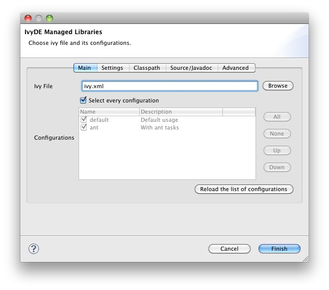

Create a container
First, locate an ivy.xml file or a maven pom.xml ready to be used to build a classpath. Also, if necessary, locate a supporting ivysettings.xml.
Fast creation
For most of the projects, the ivy.xml file (or the pom.xml) is in the java project. So you can just right click on the ivy.xml and select "Add Ivy Library..." and you can directly access the prefilled setup of the IvyDE classpath containerStandard creation
The standard way to add the IvyDE classpath container is to manipulate the Eclipse™'s "Build Path":- Select the project in which you want to create an IvyDE classpath container and open the "Add Libraries" form of Eclipse (in package Explorer, in the context menu of your project choose : [Build Path]/[Add Libraries]).

- Select the "IvyDE Managed Dependencies" item.

- Select an ivy.xml file or a maven pom.xml and the desired configurations.
